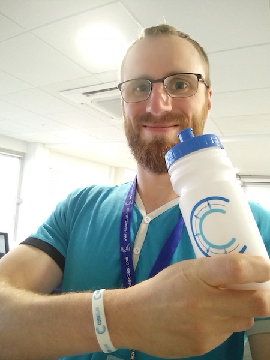

Content by Callum Anderson, 2018

So, here we are, one week down already! Technically, it's more than that because we were given plenty of pre-course work to do, to make sure we were all ready for the starting line. That consisted of:
So, 18 fresh, eager-eyed students walked into CodeClan on Monday 30/07/18... and actually, it was an easy first day. We covered Git again, because that would be central throughout the entire course. We upload our homework to Github each night for review, and we'll also be using it to collaborate with each other. And actually, this very webpage is hosted on Github! Pretty cool, huh? The entire Github community is built around supporting each other. If you upload some code publicly, people can input to it and help you out. Completely free of charge. That same community spirit is inherent at CodeClan too. I love it!
Things picked up pace as the week progressed, as you'd expect. We covered Ruby arrays and hashes, which are basically just "collections" of things. A way to store a bunch of strings (words) or numbers in a single container object.
The only stupid question is the one that isn't asked.
The actual lessons are quite engaging and interactive - questions are encouraged and I feel I abuse this privilege sometimes (the instructors must be starting to hate me). We also get a quick 5-10 minute break every hour which does help "cool the brain". It's really unlike any other classroom environment I've ever been in - including college and uni. The instructors are super chilled, and approachable. It almost feels like they're volunteering to do this, rather than it being their job! There are 3 instructors in the room as well, with one leading at any time while the other 2 chip in occasionally from the back of the room.
We also have "Labs" in the afternoon, where we're typically paired up at random with a fellow student, and have to go off to solve some tasks. When I say "go off", we can either stay in the classroom or head out to the communal areas and sit on the comfy couches. This is known in the industry as Paired Programming, and I can see the benefits. It only really works if the driver (person typing) is open to input from the navigator. Well, I was paired with three different people over the course of the week and we nailed it each time (top cohort!). It is a bit of a learning curve for us all though. A former CodeClan student came in to give us a talk on Friday, and she told us that they use Paired Programming where she works now. She said that some of the most skilled and knowledgeable developers aren't necessarily good at working in pairs. Not sure what that tells you, but I found it interesting.
We're assigned homework at the end of the day, which consists of a MVP (Minimal Viable Product - a term used in the industry) and Extensions (going that bit further). The Extensions are optional, but I managed to do them all in the first week. In the mornings, we have a "stand up" first thing, where we all stand in a circle, pass a ball around (only the person with the ball can speak), and share what went well or didn't go well the previous day. This is something that is done in Agile software development companies, and you're encouraged to share any issues you have. I haven't really brought any problems to the table yet, but I've no doubt I will in future. I like it, it's a great way to start the day. This is followed by a homework review, which is really about addressing any problems anyone had, rather than going over all of it.
Life lessons pro gratis.
Thursday is no homework night! As it is our first week, I was pleasantly surprised to find out that CodeClan had put up a tab at a local pub. The other two cohorts were invited too, which was great for networking and to quiz them on what was ahead. They are 5 and 10 weeks ahead of us respectively. Some of the instructors also made an appearance which was great. I had a great time but... made the mistake of heading out on an empty stomach. I suffered for that later. And the next day.
Friday was a bit of a break from coding. We had a lesson about active learning, which was very interesting and
definitely useful going forward. Then we had a talk from a previous student (Kate), as mentioned earlier, who has gone
on to work in a local tech startup. She was fantastic, very down to earth and has a great sense of humour. She also
allayed a lot of fears some of us had. She is the only "junior" developer in her firm, and I asked her if she was
intimidated by that. She said not really, because they simply don't expect the same level of output from you. I
guess that makes sense.
We are issued our weekend homework in the afternoon, and some of the guys do it before going home (or as much
as they can), and some of us decided to do it all at home. I did the latter, but mainly because my stomach was a
bit iffy from the previous night's activities. The homework wasn't too bad though. On to next week then!
Content by Callum Anderson, 2018